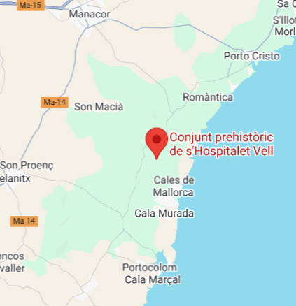

Descripció
és el nom amb què és denominat el nucli d'hàbitat talaiòtic situat dins aquesta possessió que es troba al terme municipal de Manacor, molt a prop de la costa oriental de l'illa de Mallorca, a l'alçada del nucli urbà de Cales de Mallorca.
Ubicació
Poblat de S’Hospitalet Vell és un hàbitat talaiòtic al terme municipal de Manacor.

Imatges